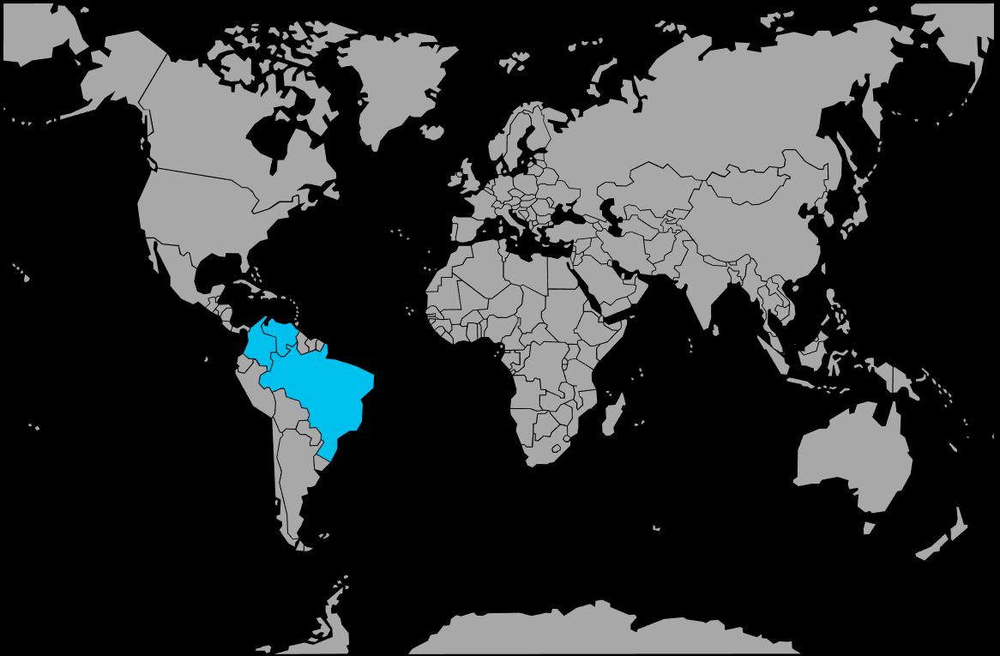

Systématique
- Ordre : Characiformes
- Famille : Characidae
- Genre : Paracheirodon
- Espèce : Paracheirodon axelrodi
Paracheirodon axelrodi, le cardinalis ou néon rouge, est un petit characidé sud‑américain très apprécié pour sa bande bleue iridescente et sa large bande rouge vif s’étendant de la tête à la queue.
Les adultes atteignent environ 3–5 cm et vivent en bancs serrés dans la zone médiane de l’aquarium, ce qui en fait un poisson de choix pour les bacs plantés de type amazonien.
Espèce grégaire par excellence, Paracheirodon axelrodi doit être maintenu en groupe d’au moins 10 individus, idéalement davantage, pour exprimer pleinement son comportement de banc et limiter le stress.
Calme et plutôt timide, il apprécie les aquariums densément plantés, avec des zones ombragées, un éclairage tamisé et peu de remous, en cohabitation avec d’autres poissons paisibles de petite taille.
Mode : pondeur libre ; les œufs sont disséminés parmi les plantes fines ou sur le substrat, sans soin parental, les adultes pouvant les consommer.
La reproduction demande généralement un bac spécifique très sombre, une eau extrêmement douce et acide, et des reproducteurs bien conditionnés ; elle reste délicate mais devient de plus en plus maîtrisée en élevage spécialisé.
Dimorphisme sexuel : peu marqué ; les femelles sont souvent un peu plus rondes et massives, surtout lorsqu’elles sont gravides, les mâles restant plus sveltes.
Espérance de vie : en général 3 à 5 ans en aquarium, avec une eau adaptée, une alimentation variée et une maintenance en banc important.
Dans la nature, Paracheirodon axelrodi fréquente les petits cours d’eau forestiers d’Amazonie, souvent de type eau noire, très acides, faiblement minéralisés, ombragés, avec substrat de feuilles mortes, racines et branchages.
Répartition
Origine naturelle :
- Amérique du Sud : bassin du rio Negro au Brésil et bassin de l’Orénoque au Venezuela et en Colombie, ainsi que plusieurs affluents associés.
- Petits igarapés et ruisseaux de forêt, zones calmes et ombragées des grands systèmes fluviaux, souvent en eau noire ou ambrée.
L’espèce vit dans des eaux chaudes, très douces et acides, chargées en tanins, avec une végétation riveraine dense et un fond tapissé de feuilles et de débris ligneux.
Paramètres de maintenance
Température : 24 à 28 °C, idéalement autour de 25–27 °C.
pH : 5,0 à 7,0, avec une préférence nette pour une eau acide à légèrement acide.
GH : 1 à 8 °dGH, eau très douce à douce.
Courant : faible, avec une filtration efficace mais un rejet adouci et peu de remous.
Volume conseillé : à partir de 80–100 L pour un banc d’une dizaine d’individus, davantage pour de grands groupes ou la cohabitation avec d’autres espèces de banc.
Régime alimentaire
Régime : omnivore à tendance micro‑carnivore ; se nourrit de petits invertébrés, larves, micro‑crustacés et zooplancton dans la nature, et accepte en aquarium paillettes, micro‑granulés, surgelés fins et petites proies vivantes.
Une alimentation variée, distribuée en petites prises, comprenant nauplies d’artémias, daphnies, cyclops et aliments secs de qualité, favorise de belles couleurs, une bonne résistance et une éventuelle préparation à la reproduction.